This section shows you how to interact with a three-dimensional image in SNAP. It assumes that you have successfully loaded an image following the instructions in the previous section. This section requires approximately 10 minutes to complete.
Step 1. Examining the Control Panel.After loading a grey image, SNAP puts itself into manual segmentation mode. The control panel for this mode is displayed to the right. It is divided into four sub-panels, which are labeled "IRIS Toolbox", "Tool Options", "Segmentation Label", and "3D Toolbox". The IRIS toolbox contains four buttons, which are used to select different modes of interaction with SNAP. These interaction modes are called tools for short. The contents of the tool options sub-panel depend on the tool that is currently selected in the IRIS toolbox. The segmentation label sub-panel is used to select the labels used for manual and automatic segmentation, and the 3D toolbox provides additional tools used to interact with the three-dimensional rendering of the segmented structures. In this section of the tutorial you will learn how to use two of these tools in the IRIS toolbox: the crosshairs tool and the zoom/pan tool, which provide different ways to quickly navigate through the three-dimensional image. |
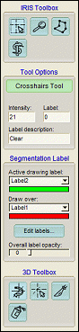 |
Once you have successfully loaded an image, the SNAP main window should look like this:
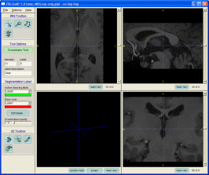
Let's focus our attention on the three of the four dark windows that are displaying slices of the volumetric image (the fourth window is used for 3D display and will be discussed later). These three slice windows display three views of the image volume, in the orthogonal axial, coronal, and sagittal planes.
Notice that a scrollbar is located next to each slice window. Under each scrollbar is located a slice counter, which shows the index of the displayed slice and the total number of slices in the direction perpendicular to the slice.
| Use the scrollbars to change the currently displayed slice in one of the three slice windows. If your mouse has a scroll wheel, you can use it to change the slice instead. Make sure that the mouse cursor is inside of the slice window that you want to interact with. |
A key feature of SNAP is that the three slices are not viewed independently, but rather linked by a common cursor. As you manipulate the scroll bars, you will notice that the blue lines in the other two slice windows are moving. These blue lines indicate the intersection between orthogonal slices. As we will see shortly, the common cursor makes it easy to examine the volumetric image near any particular voxel.
Crosshairs mode is used to quickly focus all three slide views onto a location in the image. When you click on one of the slices, the other two slices are adjusted so that the pixel where you clicked becomes the point of intersection of the three slices. Thus, you can easily examine the orthogonal views of the image in the neighborhood of any pixel.
| Select the crosshairs tool in the IRIS toolbox (shown below) |
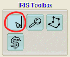
Left-click on any one of the three slices. Watch how the other two slices change. |
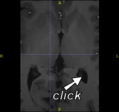
You can also hold down the left mouse button and move the mouse around the slice for faster navigation. Remember that you can use the scroll wheel of your mouse to change the slice currently displayed in the slice window under the mouse. This lets you move around the image in three dimensions, without moving the mouse away from the slice window! |
You will notice that the common cursor formed by the blue dashed lines always points to the same voxel in all three slice views. The grey level intensity of the voxel and the segmentation label corresponding to it are displayed in the tool options sub-panel of the control panel:
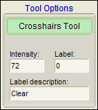
Since we have not done any segmentation yet, the segmentation label at every voxel has numeric value 0 and is called "Clear". The action of clicking on a voxel in the image to check its greylevel intentensity value is called probing. We will make use of probing later in this tutorial.
In other SNAP modes where the left mouse button is used for other tasks, you can still move the crosshairs by using the middle mouse button, or by holding the Alt key on the keyboard and using the left mouse button. |
While the crosshairs tool lets you move around the image, the zoom/pan tool allows you to zoom in on a particular region of a slice and to pan around when the whole slice does not fit into a slice window.
| Select the zoom/pan tool in the IRIS toolbox (shown below) |
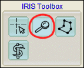
Click and hold the right mouse button anywhere in one of the slice windows, and drag the mouse up to zoom into the slice. Drag the mouse down to zoom out. Click and hold the left mouse button anywhere in one of the slice windows, and drag the mouse in any direction to pan around the image. Click the Reset View button located below each slice window to restore the original zoom level, as illustrated below. |
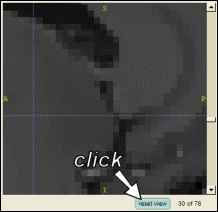
By default, SNAP lets you change the zoom in all three slice windows independently. However, it is often desireable to make sure that each of the three slices is displayed using the same zoom level. The tool options sub-panel, which is shown below, allows you to link the zoom level between the three slice views, as well as to specify zoom level explicitly.
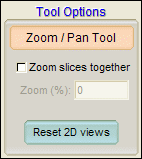
Tick the "Zoom slices together" check-box in the tool options sub-panel. Try zooming in and out in one of the slice windows by dragging the mouse (as before). Notice how the other slices zoom in accordingly. Type in the number 200 into the "Zoom %" text box, and press the Enter key. The slices will zoom to double the default zoom level. Click the "Reset 2D views" button. The zoom level will return to default in all three slices. |
When slices are zoomed together, the number of pixels on the computer screen corresponding to a unit of length in the space of the 3D image is the same in all three slice windows. When slices are zoomed independently, the a distance in image space may correspond to different distances in the slice windows. |
The MRI image that we have loaded in the last section of this tutorial has fairly low contrast. It is difficult to see some of the structures in the image. SNAP provides a windowing dialog for adjusting the mapping between intensities in the 3D image and the intensities of the displayed slices.
| Select Options | Intensity Curve... using the menu bar. The windowing dialog will appear. |
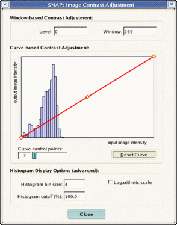
This dialog consists of a plot area on the left and several controls and buttons on the right. The plot area displays the current mapping between image intensities and display intensities as a think red line with four embedded yellow diamonds. These diamonds are called control points and can be used to change the shape of the mapping. Also, the plot area shows in blue the histogram of the intensities in the grey image. Notice that most of the intensities fall in the lower third of the intensity range. So, to improve the contrast, we will adjust the mapping accordingly.
Type the number 100 into the 'Window' text box, and press the Enter key. |
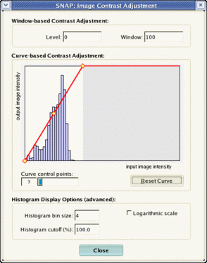
Notice how the red line changes, and the displayed slices change contrast. You can also directly manipulate the curve by moving the control points.
Move the mouse over one of the yellow control points, hold down the left mouse button and move the mouse to update the mapping |
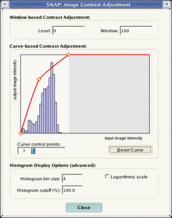
The number shown in the text box labeled 'Level' is the image intenisty of the leftmost control point. The number shown in the text box labeled 'Window' is the difference between the rightmost and leftmost control points. The slider 'Control Points' allows you to change the number of the control points, increasing the control over the shape of the mapping curve. |
Press the 'Close' button to close the dialog |
By default, SNAP shows the axial slice in the upper left, the sagittal in the upper right, and the coronal slice in the lower right. You can change the order of the display using the 'Display Options' dialog.
|
Select Options | Display Options... using the menu bar. The display options dialog will appear. Choose the 'Layout' tab. |
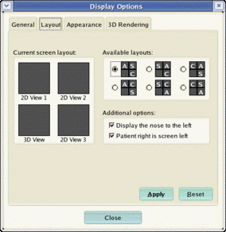
Experiment with selecting different display configurations. Press 'Apply' to put the selected configuration into effect. Press 'Close' to close the dialog. |
You can adjust the appearance of certain elements of the SNAP User Interface. This is useful if you are preparing a manuscript or a presentation and want to make sure that elements such as crosshairs are clearly visible.
|
Select Options | Display Options... using the menu bar. The display options dialog will appear. Choose the 'Appearance' tab. |
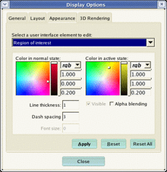
Choose one of the available user inteface elements and adjust its color, line thickness, etc. Press 'Apply' to make changes. Press 'Reset' to restore default settings. Press 'Close' to close the dialog. |